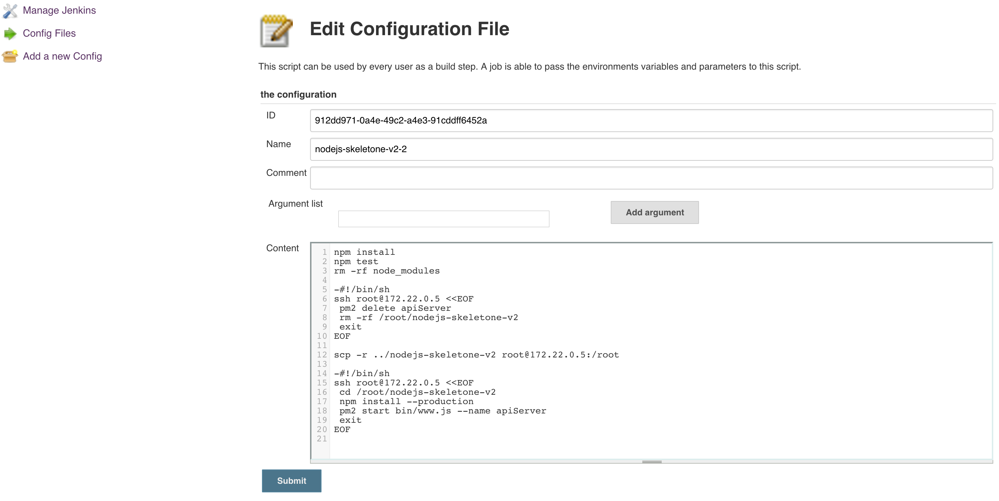
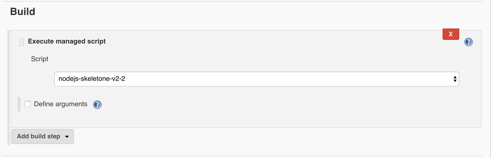

jenkins로 배포하기 - nodejs-2
jenkins로 nodejs 서버 배포하기 - 2
이전 포스트 jenkins로 nodejs 서버 배포하기 - 1 를 통해 nodejs 서버를 remote 서버로 쉘스크립트 EOF를 사용하여 remote 서버에서 git clone 하여 배포하는 법을 알아보았다.
이번 포스트에서는 두번째방법으로 첫번째 방법보다는 좀더 간단한 방법을 소개하려한다.
쉘 스크립트 EOF 와 SCP
기본적으로 쉘스크립트 EOF를 사용하여 jenkins가 remote 서버에서 control하는 기본 개념은 같다.
이후 첫번째방법에서는 jenkins가 remote 서버 접속후 프로젝트를 다시 clone 하여 job을 수행하는 방법이었으며, 이번에 소개해드릴방법은 jenkins가 test를 수행한 프로젝트 자체를 scp 명령어를 사용해서 remote 서버로 프로젝트를 전송하는 방법이다 .
jenkins [ Managed script file ] 플러그인을 다음과 같이 설정하였다.
jenkins관리 -> Managed files -> Add a new Config -> Managed script file

- git push event hook을 받은 jenkins가 test를 수행할것이므로 패키지를 설치한다
- mocha test framework 를 사용하여 프로젝트 test를 진행한다.
- scp 로 remote 서버로 프로젝트를 전송할 준비작업으로, test를 마친 jenkins가 프로젝트 패키지를 모두 삭제한다. (remote 서버에서는 서비스에 필요한 패키지만 필요하므로)
- EOF 를 사용하여 remote 서버로 접속후 이미 실행되고있는 nodejs 서버를 중지 한다 .
- 서비스되고있는 프로젝트를 삭제한다
- jenkins에서 방금 test를 수행한 프로젝트를 remote 서버로 프로젝트 전송을 시작한다.
- EOF로 remote 서버로 재접속 한후, 서비스에 필요한 패키지만 받는다(–production)
- pm2를 사용하여 서비스를 시작한다.
Managed script file 작성이 끝나면 마지막으로 jenkins에 설정정보를 추가한다.
[ Build - managed script]

왜 SCP를 사용하는가
jenkins로 nodejs 서버 배포하기 - 1 포스트에서는 쉘스크립트 EOF를 사용하여 remote 서버에 jenkins가 접속하여 git clone명령어를 수행하고 프로젝트 서비스하는 방법이었다.
그렇다면 결론적으로 remote 서버에서는 git clone 명령어로 프로젝트를 받든, jenkins가 scp를 사용하여 프로젝트를 보내주든, 결국 서비스할 프로젝트는 동일하다 .
하지만 필자가 생각하기엔 첫번째 방법에서는 시간차로인한 문제점이 있었다. 다음과 같은 시나리오를 생각해보자.
- 개발자가 git push를 수행하여 jenkins가 git push event hook을 받았다.
- jenkins가 test 를 수행한다.
- jenkins가 test를 수행하는도중 또 다른 개발자가 git push 를 수행하였다.
- test를 마친 jenkins가 remote 서버에 접속한다.
- jenkins에서 test 를 거치지않은 방금 또다른 개발자가 push 한 git project를 clone한다.
- 결론적으로 jenkins에서 수행한 test는 수행할 필요가 없어지게되었다.(시간차로 인한 프로젝트 불일치)
물론 또다른 개발자가 push 한 프로젝트는 jenkins에서 push event hook을 받아 배포를 또다시 수행할테지만, 짧은 시간이나마 remote 서버에 배포된 프로젝트가 오류가 있었다면 서버가 죽게될것이다.(test 과정을 거치지않았기때문)
이러한 이유로 필자는 scp를 사용하여 프로젝트를 전송하는 방법을 생각하였다. scp를 사용하면 jenkins에서 test를 수행한 프로젝트를 remote 서버에 프로젝트를 보내기때문에 프로젝트 일관성이 보장되어 위와같은 시나리오는 막을수있다.
또다른 이점
jenkins로 nodejs 서버 배포하기 - 1 에서는 remote 서버에서 git clone을 받기에 github에 remote 서버 rsa public key를 등록하였다. 하지만 jenkins에서 scp를 사용하여 프로젝트를 전송하면 이런 과정이 필요없어지게되어 remote 서버에서 rsa 키를 생성할 필요도 없어지게되었고 github에 remote 서버 public key를 등록할 필요도 없어지게되었다.
견해
jenkins로 nodejs 서버 배포하기 - 1 와 같이 jenkins가 test 를 수행후 remote 서버에 배포를하는 결과는 동일하다.
첫번째방법 remote 서버에서 git clone하여 수행하는 방법은 여러개발자로 인해 빈번하게 push event가 일어나면 위에서 언급한 시간차로인한 프로젝트 불일치 현상이 생길수있는 문제점이므로, 정해진시간(주로 새벽에)에 jenkins가 remote 서버로 배포를 수행한다면 문제가되지않을것이다.(Poll SCM schedule)
이렇게 nodejs 서버를 remote 서버로 배포하는 2가지 방법에대해서 알아보았다.
또 다른 방법이 분명 있을것이고, 좀더 좋은 방법을 새롭게 알게된다면 새롭게 포스트를 올리도록 하겠다.